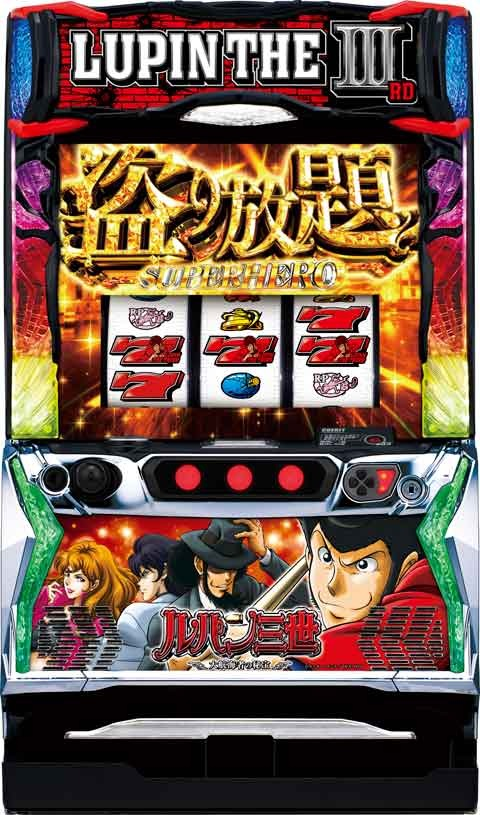
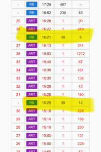
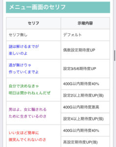
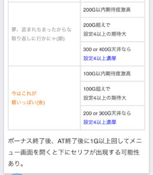
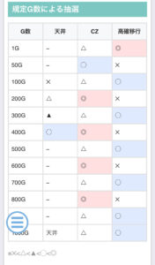
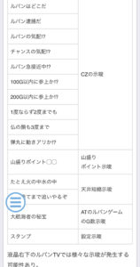
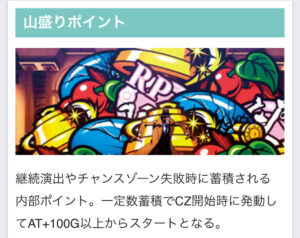
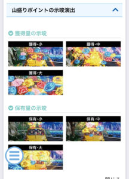

Lルパン三世 大航海者の秘宝

【天井情報】
AT間 1000G+α AT確定(ボーナス単発でリセットされない)
設定変更時 700G+α
【リセット判別】
オリンピアのためガックン判別不可？
朝一から100G前後消化すると液晶に内部加算された現ゲーム数が表示される。
前日のやめゲーム数が加算されていると据置濃厚？
【有利区間について】
差枚+2200枚前後で有利切れ？ 有利切れ時は32Gの俺の名はルパン三世ゾーン(上位ATへのCZ)突入。
狙い目
【AT間天井狙い】
差枚マイナス時 700Gから
差枚プラス時 750Gから
リセット時液晶300Gから
(朝イチのみデータ機と液晶ゲーム数がズレる)
※差枚プラス時は冷遇ありそうなためボーダーを上げる。
※ボーナスで天井はリセットされない。
【一撃大量獲得後かつ上位AT非経由（40G前後のRB履歴無し）台狙い】
・積極派 一撃2250枚以上後
・慎重派 一撃2500枚以上後
0Gから400Gのゾーンまで
※一撃2500枚上かつ上位AT突入していない台は400ゾーンが天井濃厚
※一撃2000枚以上でも400Gゾーン天井の可能性が上がる
【ゾーン狙い】
・400ゾーン
示唆無し 370G
400G以内期待度40％ 320G
差枚+1900枚以上 0G
・200ゾーン
示唆無し 190G
差枚+1700枚以上 0G
・600ゾーン
590G
【メニュー画面セリフ狙い】
200G以内期待度激高以上は当選まで。
400G以内激高も打てそう。
※激高でも規定のG数過ぎたらやめ？
【山盛ポイント狙い】
保有大なら解放まで？
【有利区間切れ狙い】
差枚+1700枚以上は0から200Gのゾーンまで。
差枚+1900枚以上は0から400Gのゾーンまで。
下記の様な上位ATまたは俺の名はルパン三世ゾーン突入の信号ある場合はその時点で有利切れてるものとする。

【上位CZ経由後(有利切れ後想定)】
積極派 0GからAT当選まで
慎重派
・200Gゾーン狙い
0Gから200Gゾーンまで
・天井狙い
270Gから
※上位CZ後の差枚が同一有利区間で+500枚以上ならAT当選までを推奨
※RB履歴の払い出しがある場合上位CZ履歴ではない可能性がある。２０枚以上で危険。
【有利切れについて】
上位CZが有利切れるタイミングと思われる。
ただし早い初当たりで上位CZの様な履歴が出てくる可能性もあるので、しっかり差枚で上位CZ突入してる様な履歴が望ましい。
上位CZ経由後の差枚(獲得枚数)次第でボーダー調整する感じになりそう。
やめ時
即前兆(10Gくらい)を確認して前兆発生ならフォロー。発生しなければメニュー画面の示唆などを確認してやめ。
AT中に俺の名はルパン三世ゾーン接近中表記がある場合、100G+αまで確認。
その他
メニュー画面のセリフ


規定ゲーム数による抽選


山盛りポイント


参考元
基本情報
- メーカー: 平和
- 機械割: 97.7% 〜 114.3%
- 導入開始日: 2024年12月02日（月）
- ゲーム性概要: ●通常時は規定ゲーム数とレア役のダブル抽選 ●CZ期待度は約43% ●初当りはボーナスorAT直行 ●ATは純増約2.7枚/G、ゲーム数上乗せタイプ ●上位ATは純増約4.7枚/G


打ち方
打ち方・小役
打ち方（小役狙い）
［最初に狙う絵柄］

左リール上段ベル停止時以外は、中＆右フリー打ちでOKだ。
［ベル停止時のみベルを目押し］

中リールはフリー打ちで引き込めるので、右リールのみベルを目押ししよう。
［レア役の停止例］

※あくまで停止形の一部
［デカ目の停止例］

※すべて順押し・ハサミ打ち時のみ有効
解析情報通常時
小役関連
小役契機の抽選
レア役時は高確移行やCZ、ボーナスを抽選。強チェリーは約25%でボーナスかつハズれてもCZのチャンス、デカ目はAT濃厚となる。
レア役の抽選
| 役 | 抽選対象 |
|---|---|
| チャンスリプレイ | 高確移行・CZ |
| ベル | 高確移行・CZ |
| 弱チェリー | 高確移行・CZ |
| 強チェリー | CZ・ボーナス・AT ※ボーナス以上期待度約25% |
| デカ目 | AT濃厚 |
| 中段チェリー | AT濃厚 |
小役確率
| 役 | 確率 |
|---|---|
| 押し順リプレイ | 1/25.0 |
| 押し順なしリプレイ | 1/12.5 |
| チャンスリプレイ | 1/99.9 |
| ベル | 1/139.4 |
| 弱チェリー | 1/80.0 |
| 強チェリー | 1/262.1 |
| デカ目 | 1/16482.1 |
| 中段チェリー | 1/16384.0 |
状態別・デカ目確率まとめ
| 役 | 確率 |
|---|---|
| 通常時 | 1/16482.1 |
| CZ中 | 1/25.0 |
| 裏デカ目高確中 | 1/50.0 |
| ATの非高確中 | 1/357.7 |
| ATの高確中 | 1/25.0 |
| ルパンゲーム中 | 1/25.0 |
| 怪盗ラッシュ中 | 1/25.0 |
デカ目は滞在状態によって出現確率が変化する。
高確以上移行率
| 役 | 移行率 |
|---|---|
| チャンスリプレイ | 30.1% |
| ベル | 0.4% |
| 弱チェリー | 17.6% |
ボーナス以上当選率
| 設定 | 強チェリー | デカ目 | 中段チェリー |
|---|---|---|---|
| 1 | 25.0% | 100% （AT濃厚） | 100% （AT濃厚） |
| 2 | 25.0% | 100% （AT濃厚） | 100% （AT濃厚） |
| 3 | 25.0% | 100% （AT濃厚） | 100% （AT濃厚） |
| 4 | 30.1% | 100% （AT濃厚） | 100% （AT濃厚） |
| 5 | 30.1% | 100% （AT濃厚） | 100% （AT濃厚） |
| 6 | 30.1% | 100% （AT濃厚） | 100% （AT濃厚） |
CZ当選率
| 役 | 通常滞在時 | 高確滞在時 | 超高確滞在時 |
|---|---|---|---|
| チャンスリプレイ | 0.4% | 0.4% | 100% |
| ベル | 12.5% | 25.0% | 100% |
| 弱チェリー | 2.0% | 12.5% | 100% |
| 強チェリー | 20.3% | 33.2% | 100% |
強チェリーで初当りに当選した時の比率
| 設定 | ボーナス | AT |
|---|---|---|
| 1～3 | 約92% | 約8% |
| 4～6 | 約91% | 約9% |
強チェリーはボーナスに当選しなかった場合にCZを抽選する。
［CZ本前兆中の強チェリー抽選］ CZ本前兆中の強チェリーではボーナスが抽選されず、CZのみ抽選。CZに当選した場合、当該のCZ終了後（ボーナスやATに当選した場合はボーナス・AT終了後）に前兆を経てCZに突入する。
内部状態関連
内部状態概要
レア役やゲーム数消化を契機に移行する高確・超高確滞在中はレア役時のCZ当選率がアップ。保証ゲーム数は20G・30G・50Gの3種類があり、状態はおもにステージ（夕方や夜）で示唆される。 超高確中はレア役成立＝CZ以上 となるため強力だ。
内部状態概要
| 項目 | 内容 |
|---|---|
| 移行契機 | チャンスリプレイ・ベル・弱チェリー時の抽選、 ゲーム数消化時の抽選 |
| 種類 | 通常・高確・超高確 |
| 保証ゲーム数 | 20G・30G・50G |
| 特徴 | 滞在中はレア役契機のCZ当選率がアップ |
規定ゲーム数消化
規定ゲーム数消化概要

ゲーム数消化でCZや高確移行を抽選。基本は100G区切りの抽選となる。天井到達時はAT濃厚（1000G未満の浅い天井が選ばれることもあり）。
ゲーム数テーブル一覧
| ゲーム数 | 天井（AT当選） | CZ | 高確移行 |
|---|---|---|---|
| 1G | － | △ | ◎ |
| 50G | － | ◯ | ✕ |
| 100G | ✕ | △ | ◯ |
| 200G | △ | ◎ | ✕ |
| 300G | ▲ | △ | ◯ |
| 400G | ◯ | ◎ | ✕ |
| 500G | － | △ | ◯ |
| 600G | － | ◎ | ✕ |
| 700G | 設定変更時天井 | △ | ◯ |
| 800G | － | ◎ | ✕ |
| 900G | － | △ | ◯ |
| 1000G | 天井 | △ | ◯ |
高設定は100・200・300・400Gの天井が選ばれやすい。
山盛りポイント
山盛りポイント概要
連続演出やCZ失敗時に貯まる可能性があるポイント。一定数まで蓄積すればCZ開始時に発動してAT100Gスタートになる。 ポイント獲得時や保有量示唆のエフェクトでポイント量が示唆される。
［山盛りポイント発動］

発動すれば専用演出が発生してATに直行する。
［獲得：小］

［獲得：中］

［獲得：大］

［保有量：小］

［保有量：中］

［保有量：大］

ICPOチャレンジ（CZ）
CZ概要

まずCZ突入時の成立役に応じてAT当選の成否が抽選され、結果に応じて期待度の異なる4種類のCZを決定。 CZ中はデカ目確率が大幅にアップしていて、デカ目や強チェリーを引けばAT濃厚、レア役でも成功書き換えが抽選される。 レア役やデカ目を引けなくても最終ゲームのジャッジでATに当選するパターンもある。
ICPOチャレンジ（CZ）性能
| 項目 | 内容 |
|---|---|
| 当選契機 | 規定ゲーム数消化、レア役の一部 |
| 継続ゲーム数 | 8G |
| ボーナス以上期待度 | 43%以上 |
| デカ目確率 | 1/25.0 |
| 消化中の抽選 | レア役などでボーナス抽選、 デカ目はボーナス以上濃厚 |
| その他 | 滞在中はデカ目が高確率で成立 |
CZの種類
| 種類 | ボーナス以上期待度序列 |
|---|---|
| 銭形 | 低 |
| ルパン | ↓ |
| 不二子 | 高（成功でAT濃厚） |
| ルパンVS銭形 | ボーナス以上濃厚&成功で3桁ゲーム数のAT |
CZ確率&期待度
| 設定 | 確率 | 期待度 |
|---|---|---|
| 1 | 1/211.5 | 43.3% |
| 2 | 1/210.0 | 44.6% |
| 3 | 1/204.9 | 46.1% |
| 4 | 1/199.7 | 48.9% |
| 5 | 1/199.0 | 51.5% |
| 6 | 1/198.0 | 51.8% |
［CZの種類］

組み合わせパターンも複数あり。
［CZの種類決定］

ルパンが上に行くほど上位のCZに期待できる。
［銭形］

［ルパン］

［不二子］

［ルパンVS銭形］

［最終ゲームのジャッジ］

CZ開始時の成立役別CZの種類振り分け
| CZの種類 | その他 | 弱レア役 | 強チェリー | デカ目 |
|---|---|---|---|---|
| 銭形 | 77.9% | － | － | － |
| ルパン | 15.2% | 43.9% | － | － |
| 不二子 | 4.2% | 43.8% | － | － |
| ルパンVS銭形 | 2.7% | 12.3% | 100% | 100% |
※弱レア役…チャンスリプレイ・ベル・弱チェリー
中段チェリーは開始時・消化中ともに初期100Gの上位AT濃厚となる。
CZ開始時のボーナス以上当選率（設定1）
| CZの種類 | 当選率 |
|---|---|
| 銭形 | 5.1% |
| ルパン | 30.9% |
| 不二子 | 69.1% |
| ルパンVS銭形 | 44.5% |
CZ消化中のボーナス以上書き換え当選率
| 役 | 当選率 |
|---|---|
| チャンスリプレイ | 0.4% |
| ベル | 10.2% |
| 弱チェリー | 2.7% |
| 強チェリー | AT濃厚 |
| デカ目 | AT濃厚 |
| 中段チェリー | 初期100Gの上位ATへ |
ボーナスが確定した状態ではレア役でAT昇格（ダブル7揃い）、AT確定中は初期ゲームが100Gになる抽選がおこなわれる。
CZのストック抽選について
CZは本前兆中にレア役を引いた場合や、ゲーム数消化時のゾーンが被った場合、CZのストックを抽選。ストックされた場合はCZ終了後やAT終了後に前兆を経てCZに突入する。
演出動画
ロングフリーズ
中段チェリー成立時の一部で発生し、上位ATへの直行が濃厚。初期ゲーム数100G以上も濃厚なので、強力な出玉トリガーのひとつと言える。
解析情報ボーナス時
スーパーヒーロー（AT）
AT概要

消化中はゲーム数上乗せ・ルパンゲーム・BIGチャンス（特化ゾーン）のトリプル抽選。 基本的にはルパンゲームを引いて、ルパンゲーム中のデカ目でBIGチャンスを当選させるのがロング継続のメインルートとなる。
スーパーヒーロー（AT）性能
| 項目 | 内容 |
|---|---|
| 当選契機 | 初当り時の直行、ボーナス時の抽選など |
| 初期ゲーム数 | 50G～300G |
| 1Gあたりの純増 | 約2.7枚 |
| AT期待度 | 約30% |
| デカ目確率 | 非高確中：357.7、高確中：1/25.0 ※平均すると1/298.6 |
| 消化中の抽選 | レア役でデカ目高確移行、ゲーム数上乗せ、 ルパンゲーム、BIGチャンスを抽選、 規定ゲーム数でルパンゲーム抽選 |
AT初当り確率
| 設定 | 確率 |
|---|---|
| 1 | 1/371.4 |
| 2 | 1/353.8 |
| 3 | 1/330.2 |
| 4 | 1/300.3 |
| 5 | 1/289.9 |
| 6 | 1/274.9 |
デカ目高確移行率
| 役 | 当選率 |
|---|---|
| チャンスリプレイ | 33.2% |
※デカ目高確中はデカ目確率が1/25.0にアップ
デカ目高確はチャンスリプレイからのみ移行する。
［規定ゲーム数消化］ルパンゲーム当選率
| 規定ゲーム数 | AT初回 | モード1 | モード2 | モード3 |
|---|---|---|---|---|
| 0G | － | 0.4% | 0.4% | 4.8% |
| 30G | 34.2% | 16.0% | 16.0% | 66.8% |
| 80G | 20.4% | 4.2% | 4.2% | 100% |
| 130G | 16.6% | 16.0% | 16.0% | － |
| 180G | 100% | 4.6% | 100% | － |
| 250G | － | 100% | － | － |
内部的なモードで規定ゲーム数消化時のルパンゲーム当選率を管理。モードはルパンゲームまたはBIGチャンス当選で再抽選される。
［レア役契機］ルパンゲーム当選率
| 役 | 当選率 |
|---|---|
| チャンスリプレイ | － |
| ベル | 15.2% |
| 弱チェリー | 2.0% （当選すればゼニロボルパンゲーム） |
| 強チェリー | 25.0% |
| デカ目 | 40.2% |
| 中段チェリー | － |
弱チェリー以外でルパンゲームに当選した場合、約0.6%でゼニロボルパンゲームになる。弱チェリー以外からゼニロボあおりが発生した時点でゼニロボルパンゲーム濃厚だ。
レア役契機のゲーム数上乗せ当選率
| 役 | 当選率 |
|---|---|
| チャンスリプレイ | 0.04% |
| ベル | 9.8% |
| 弱チェリー | 14.9% |
| 強チェリー | 100% |
| デカ目 | 100% |
| 中段チェリー | 100% |
ゲーム数上乗せ当選時の上乗せゲーム数振り分け
| 上乗せ | チャンスリプレイ | ベル | 弱チェリー |
|---|---|---|---|
| ＋10G | － | － | 94.48% |
| ＋30G | － | 51.39% | 2.61% |
| ＋50G | － | 35.46% | 2.62% |
| ＋100G | 32.84% | 11.91% | 0.28% |
| ＋200G | 33.55% | 0.63% | 0.002% |
| ＋300G | 33.62% | 0.62% | 0.001% |
| 上乗せ | 強チェリー | デカ目 | 中段チェリー |
| ＋10G | 59.24% | － | － |
| ＋30G | 29.79% | 67.63% | － |
| ＋50G | 9.68% | 19.15% | － |
| ＋100G | 1.01% | 12.74% | 82.53% |
| ＋200G | 0.19% | 0.43% | 13.20% |
| ＋300G | 0.09% | 0.04% | 4.27% |
BIGチャンス直撃当選率
| 役 | シングル | ダブル | 合算 |
|---|---|---|---|
| チャンスリプレイ | － | － | － |
| ベル | － | － | － |
| 弱チェリー | － | － | － |
| 強チェリー | 2.3% | 0.4% | 2.7% |
| デカ目 | 4.7% | 0.4% | 5.1% |
| 中段チェリー | 50.0% | 50.0% | 100% |
BIGチャンスの直撃はレアパターン。基本的にルパンゲームを経由しての当選がメインとなる。
成立役ごとの抽選まとめ
| 項目 | チャンスリプレイ | ベル | 弱チェリー |
|---|---|---|---|
| 確率 | 1/99.9 | 1/139.4 | 1/80.0 |
| デカ目高確 | 33.2% | － | － |
| ゲーム数上乗せ | 0.04% | 9.80% | 14.87% |
| ルパンゲーム当選 | － | 15.23% | 1.98% |
| BIGチャンス当選 | － | － | － |
| トータル | 33.23% | 23.54% | 16.56％ |
| 項目 | 強チェリー | デカ目 | 中段チェリー |
| 確率 | 1/262.1 | 1/357.7 | 1/16384.0 |
| デカ目高確 | － | － | － |
| ゲーム数上乗せ | 100% | 100% | 100% |
| ルパンゲーム当選 | 25.0% | 40.23% | － |
| BIGチャンス直撃 | 2.73% | 5.08% | 100% |
| トータル | 100% | 100% | 100% |
引き戻し状態
AT後の引き戻し状態
AT中は残りの上限差枚数を参照して画面右上に「俺の名はルパン三世ゾーン高確率接近中!?」の帯が発生して有利区間リセットが近いことを示唆。帯の種類は青・赤の2種類があり、 青帯はATが終了しても100G以内に引き戻せば状態を維持!? 赤帯が出現した後はATが終了しても100G間にCZor初当りを引けば、有利区間がリセットされて俺の名はルパン三世ゾーンに突入 する。
［青帯］

［赤帯］

初当りボーナス
初当り時のライン（ボーナス・AT分岐）

ボーナスが確定した後は、シングルラインならボーナス、ダブルラインならATに突入。初当り時のAT比率は約70%と高いところが特徴だ。
初当り時・ラインごとの確率
| 設定 | シングル | ダブル | 合算 |
|---|---|---|---|
| 1 | 1/920.1 | 1/421.5 | 1/289.1 |
| 2 | 1/879.1 | 1/401.4 | 1/275.6 |
| 3 | 1/831.3 | 1/383.9 | 1/262.6 |
| 4 | 1/685.2 | 1/355.1 | 1/233.9 |
| 5 | 1/633.5 | 1/345.6 | 1/223.6 |
| 6 | 1/636.9 | 1/327.5 | 1/216.3 |
初当り時・ラインごと割合
| 設定 | シングル | ダブル |
|---|---|---|
| 1 | 約31% | 約69% |
| 2 | 約31% | 約69% |
| 3 | 約32% | 約68% |
| 4 | 約34% | 約66% |
| 5 | 約35% | 約65% |
| 6 | 約34% | 約66% |
ボーナス概要

まず、初当りボーナス当選時にATの当否が抽選され、結果に応じて4種類のボーナスのいずれかへ移行。消化中はレア役で成功書き換えを抽選する。 AT非当選だった場合でも天井までのゲーム数はリセットされない ため、ボーナスの引き次第では少ないコインロスで天井にたどり着くことも可能だ。
ボーナス性能
| 項目 | 内容 |
|---|---|
| 当選契機 | CZ成功、レア役の一部など |
| 継続ゲーム数 | 30G |
| 1Gあたりの純増 | 約2.0枚 |
| AT期待度 | 約30% |
| 消化中の抽選 | レア役などでAT抽選 |
ボーナスの種類
| 種類 | AT期待度序列 |
|---|---|
| ルパンボーナス | ★★☆ |
| 次元ボーナス | ★★★☆ |
| 五エ門ボーナス | ★★★★ |
| 不二子ボーナス | AT濃厚 |
※期待度の ☆ は星半個分
［ルパンボーナス］
BARを狙え発生時にBARが揃う場合、内部的にデカ目が成立しているので、狙えカットイン発生時は順押しでデカ目を狙って楽しむこともできる。
［次元ボーナス］
［五エ門ボーナス］
［不二子ボーナス］
ボーナス中のAT当選率
| 役 | 当選率 |
|---|---|
| チャンスリプレイ | 0.4% |
| ベル | 3.1% |
| 弱チェリー | 0.4% |
| 強チェリー | 25.0% |
開始時の抽選に漏れた場合は消化中のレア役でAT当選への書き換えを抽選する。
初当りボーナスの種別振り分け
初当り時のボーナス（赤7シングル揃い） 種別は、AT期待度が違うだけでなく、設定差も大きい。
ルパンゲーム
ルパンゲーム概要

8G固定のCZ（デカ目高確率状態）で、種類によって成功時の恩恵などが変化。平均期待度は約50%で、成功時はBIGチャンス＋αを獲得できる。まず、開始時に成功かどうかを抽選して、結果に応じてルパンゲームの種類を決定、内部的に失敗だった場合でも消化中に成功への書き換えを抽選する。
ルパンゲーム性能
| 項目 | 内容 |
|---|---|
| 当選契機 | レア役の一部 |
| 継続ゲーム数 | 8G |
| 1Gあたりの純増 | 約0.5枚 |
| 成功期待度（平均） | 約50% |
| デカ目確率 | 1/25.0 |
| 消化中の抽選 | デカ目や強チェリーで成功濃厚、 レア役などで成功抽選 |
| その他 | 滞在中はデカ目確率が大幅にアップ、 ゲームは全部で5種類 |
消化中はATゲーム数の減算がストップする。
ルパンゲームの種類
| ゲームの種類 | 性能 |
|---|---|
| ルパンゲーム | デフォルト（成功でBIGチャンス） |
| 大逃走ルパンゲーム | BIGチャンス濃厚 |
| 不二子ルパンゲーム | 成功でBIGチャンスダブルかつ 怪盗ラッシュのチャンス （不二子パネルの位置優遇） |
| ゼニロボルパンゲーム | 成功でBIGチャンスかつ上位AT |
| 超ルパンゲーム | 成功濃厚かつ報酬が優遇 |
ルパンゲーム確率
| 設定 | 確率 |
|---|---|
| 1 | 1/120.4 |
| 2 | 1/120.2 |
| 3 | 1/120.1 |
| 4 | 1/118.7 |
| 5 | 1/114.9 |
| 6 | 1/114.3 |
［デフォルトのルパンゲーム］

［大逃走ルパンゲーム］

［不二子ルパンゲーム］

［ゼニロボルパンゲーム］

［超ルパンゲーム］

成功抽選
抽選の流れは通常時のCZと同じで、まず最初に成功かどうかと成功時の恩恵を決め、結果に応じて発展するゲームの種類を決定。消化中はデカ目（1/25.0）やレア役で成功への書き換えを抽選する。 最終ゲームはレア役以外でも書き換えが抽選され、レア役なら書き換え濃厚となる。
突入時の成功期待度
| ゲームの種類 | 成功期待度 |
|---|---|
| ルパンゲーム | 約8% |
| 大逃走ルパンゲーム | 100% |
| 不二子ルパンゲーム | 約12% |
| ゼニロボルパンゲーム | 約12% |
| 超ルパンゲーム | BIGチャンスダブル濃厚 |
消化中の書き換え期待度
| 役 | 最終ゲーム以外 | 最終ゲーム |
|---|---|---|
| その他 | － | 10.2% |
| チャンスリプレイ | 3.1% | 100% |
| ベル | 30.1% | 100% |
| 弱チェリー | 10.2% | 100% |
| 強チェリー | 100% | 100% |
| デカ目 | 100% | 100% |
| 中段チェリー | 100% | 100% |
※最終ゲームのトータル期待度は12.1%
キャラテーブル
| テーブル | 1G目 | 2G目 | 3G目 | 4G目 | 5G目 |
|---|---|---|---|---|---|
| 1 | 不二子 | 不二子 | 不二子 | 不二子 | 不二子 |
| 2 | 不二子 | 次元 | ルパン | 五エ門 | 不二子 |
| 3 | 不二子 | 次元 | ルパン | 五エ門 | ルパン |
| 4 | 次元 | 不二子 | ルパン | 五エ門 | ルパン |
| 5 | 五エ門 | 次元 | 不二子 | 次元 | ルパン |
| 6 | 次元 | 五エ門 | ルパン | 不二子 | 不二子 |
| 7 | 五エ門 | 次元 | ルパン | 五エ門 | 不二子 |
| 8 | 次元 | 五エ門 | ルパン | 次元 | 不二子 |
キャラテーブル選択率
| テーブル | 選択率 |
|---|---|
| 1 | 0.8% |
| 2 | 0.4% |
| 3 | 0.8% |
| 4 | 2.0% |
| 5 | 3.9% |
| 6 | 9.0% |
| 7 | 25.0% |
| 8 | 58.1% |
テーブルはAT開始時に抽選。ルパンゲーム失敗時とBIGチャンス終了後に再抽選される。
BIGチャンス
BIGチャンス概要

準備中では1Gごとに特化ゾーンキャラが移動していき、プラムorレア役が成立したゲームのキャラのBIGチャンスへ発展。キャラの配置パターンも複数ある。レア役時は上乗せ性能のアップしたBIGチャンスダブルのチャンスとなる。
BIGチャンス準備状態の抽選
| 役 | 抽選 |
|---|---|
| プラム | 当該キャラのBIGチャンスへ |
| レア役 | 当該キャラのBIGチャンスダブルへ |
BIGチャンスの種類
| キャラ | シングルセブン | ダブルセブン |
|---|---|---|
| 次元 | ● 最低保証は＋30G ● 約25%で＋100G以上 | ● ＋100G以上 |
| ルパン | ● ＋50G&約25%でループ上乗せ | ● ＋100G&約50%でループ上乗せ |
| 五エ門 | ● 最低保証は＋20G ● 分裂1回保証（上乗せ倍以上） | ● 最低保証は＋60G ● 分裂2回保証（上乗せ倍以上） |
| 不二子 | ● 怪盗ラッシュ突入 | ● 怪盗ラッシュ複数セット |
※不二子のダブル揃いは見た目上では青7が揃う
［キャラ配列］

配列パターンは多彩。オール不二子などのプレミアパターンもある。
［キャラ決定］

プラムorレア役を引いたゲームのキャラに決定する。
［キャラ決定後の7揃い］

シングルならデフォルト、ダブルなら上乗せ性能がアップ！
［不二子が最大の叩きどころ］

不二子パネルは最強の特化ゾーン「怪盗ラッシュ」へ移行するためプラムorレア役成立に期待だ。
ポイント加算抽選＆ポイントごとの性能

BIGチャンスには内部的なポイントがあり、2pt以上獲得することでBIGチャンスダブルに昇格。BIGチャンスに突入した時点で1pt所持している。 3pt以上獲得した場合はさらに上乗せ性能がアップ!?
［突入画面］準備中のポイント加算当選率
| 役 | ＋1pt | ＋2pt | ＋3pt | ＋4pt |
|---|---|---|---|---|
| その他 | － | － | － | － |
| 弱レア役 | 99.6% | 0.4% | － | － |
| 強チェリー | 50.0% | 25.0% | 25.0% | － |
※弱レア役…チャンスリプレイ・ベル・弱チェリー
開始画面のレア役は1回で複数ポイントを獲得する可能性がある。
［7揃いまでの間］準備中のポイント加算当選率 ※突入画面除く
| 役 | ＋1pt | ＋2pt | ＋3pt | ＋4pt |
|---|---|---|---|---|
| その他 | － | － | － | － |
| 弱レア役 | 50.0% | － | － | － |
| 強チェリー | 100% | － | － | － |
| デカ目 | 100% | － | － | － |
| 中段チェリー | － | － | － | 100% |
※弱レア役…チャンスリプレイ・ベル・弱チェリー
7揃いまでの間に獲得できるのは基本的に1ptずつだが、強チェリーやデカ目を引けば必ずポイントを獲得できる。
ポイント＆キャラごとの上乗せ性能 次元
| 1pt | 約25%で＋100G以上（平均50G） |
|---|---|
| 2pt | ＋100G以上濃厚（平均111G） |
| 3pt | ＋100G以上濃厚（平均157G） |
| 4pt | ＋200G以上濃厚（平均111G） |
五エ門
| 1pt | 分裂1回以上（平均60G） |
|---|---|
| 2pt | 分裂2回以上（平均131G） |
| 3pt | 分裂3回以上（平均227G） |
| 4pt | 分裂3回以上かつ4回の期待大（平均374G） |
ルパン
| 1pt | 50G＋25%で99%ループ（平均75G） |
|---|---|
| 2pt | 100G＋50%で99%ループ（平均150G） |
| 3pt | 150G保証＋99%ループ濃厚（平均250G） |
| 4pt | 200G保証＋99%ループ濃厚（平均300G） |
不二子
| 1pt | 継続ストック所持期待度 |
|---|---|
| 2pt | ↓ |
| 3pt | ↓ |
| 4pt | 高 |
怪盗ラッシュ
怪盗ラッシュ概要

11G/セットのループ型特化ゾーンで、報酬（アイコン）を獲得した場合は継続も濃厚。報酬の種類は多数あり、なかには上位AT直行パターンも存在する。デカ目確率もアップ（デカ目は報酬獲得濃厚）しているため、引き次第でエンディング直行にも十分期待できる。
怪盗ラッシュ性能
| 項目 | 内容 |
|---|---|
| 当選契機 | BIGチャンスで不二子パネル獲得 |
| 継続ゲーム数 | 11G/セット×ループ抽選 |
| 1Gあたりの純増 | 約0.5枚 |
| デカ目確率 | 1/25.0 |
| 消化中の抽選 | 成立役に応じて報酬獲得抽選 （最終ゲームは非レア役でも約50%で成功） |
| 平均継続セット数 | 5.4セット |
| 期待獲得枚数 | 2300枚オーバー |
| その他 | 1・4・7セット目は豪華な報酬がでやすい、 10セット目以降も豪華報酬期待度がアップ |
報酬パターン例（一部）
| 報酬 | 詳細 |
|---|---|
| ＋G［赤］ | ＋20G以上 |
| ＋G［黒］ | のるかそるか!? |
| ＋G［金］ | ＋100G以上 |
| ＋G［虹］ | ＋200G以上 |
| 100G | ＋100G以上 |
| 200G | ＋200G以上 |
| 300G | ＋300G以上 |
| ルパンの秘宝 | ルパン上乗せ発生 |
| 次元の秘宝 | 次元上乗せ発生 |
| 五エ門の秘宝 | 五エ門上乗せ発生 |
| 不二子の秘宝 | 不二子上乗せ発生 |
| BIG CHANCE | BIGチャンスの1G連 |
| SUPER HERO | ATセットストック |
| 盗り放題 | 上位ATへ |
報酬の種類自体は成立役に関係なく抽選されるので、運も重要になるが、1・4・7セット目は豪華報酬が選ばれやすい。
［報酬］

［報酬決定］

俺の名はルパン三世ゾーン
俺の名はルパン三世ゾーン概要

エンディング後に移行するチャンスゾーンで、成功（フリーズ）すれば上位ATへ突入。失敗しても100G以上のATへ復帰する。
俺の名はルパン三世ゾーン性能
| 項目 | 内容 |
|---|---|
| 当選契機 | エンディング後 |
| 継続ゲーム数 | 32G |
| 成功期待度 | 約50% |
| 消化中の抽選 | 毎ゲーム上位ATを抽選 |
上位AT当選率（フリーズ発生率）
| 役 | 当選率 |
|---|---|
| チャンスリプレイ | 2.7% |
| ベル | 12.5% |
| 弱チェリー | 2.7% |
| 強チェリー | 40.2% |
盗り放題（上位AT）
上位AT概要

基本的なゲーム性は通常のAT（スーパーヒーロー）と同じだが、純増が約2.7枚から約4.7枚にアップする。
盗り放題（上位AT）性能
| 項目 | 内容 |
|---|---|
| 当選契機 | ゼニロボルパンタイム成功、怪盗ラッシュの一部、 俺の名はルパン三世ゾーン成功、フリーズなど |
| 初期ゲーム数 | 100〜300G |
| 1Gあたりの純増 | 約4.7枚 |
| 消化中の抽選 | デカ目高確移行、ゲーム数上乗せ、 ルパンゲーム、BIGチャンス抽選など |
裏デカ目高確
裏デカ目高確概要
AT・上位ATともに、内部的にデカ目確率が約1/50にアップする裏デカ目高確が存在。高確率状態はデカ目成立かAT終了まで継続する（ルパンゲームやBIGチャンス中のデカ目では終わらない）。 俺の名はルパン三世ゾーン経由で上位ATへ移行した場合は裏デカ目高確濃厚となる。
裏デカ目高確性能
| 項目 | 内容 |
|---|---|
| 移行契機 | AT突入時の一部、デカ目成立時の一部、 BAR揃いの34.3% |
| 滞在中のデカ目確率 | 約1/50 |
| 終了契機 | ルパンゲームorBIGチャンス当選の一部 |
| その他 | 俺の名はルパン三世ゾーン成功時は必ず突入 |
デカ目成立時の裏デカ目高確移行率
| 移行先 | 移行率 |
|---|---|
| 裏デカ目高確 | 4.7% |
| 裏デカ目高確ロング | 0.4% |
裏デカ目高確ロングはデカ目を引いても約66%で継続。さらに継続抽選で漏れた場合でも、必ず裏デカ目高確へ移行する。
ツラヌキ・有利区間
ツラヌキ条件＆恩恵
| 項目 | 内容 |
|---|---|
| 条件 | エンディング終了後 |
| 恩恵 | 俺の名はルパン三世ゾーン突入 俺の名はルパン三世ゾーンはコチラ |
差枚数2400枚で、エンディングへ突入して有利区間をリセット。エンディング突入条件は抽選で決まるようで、2000枚前後で突入する場合もある。 エンディング後に突入する俺の名はルパン三世ゾーンは、成功すれば上位AT、失敗してもATへ復帰する。
演出情報
カスタム
ピースフラッシュカスタム


パチンコの平和機種にも搭載されている、いわゆる「先バレ」のカスタムだ。
初当りボーナス
ボーナス終了時のボイス一覧
| 種類 | ボイス |
|---|---|
| ルパン語録 | さーてひと仕事すっかー！ |
| ルパン語録 | お前さんは勘が鋭いねぇ |
| ルパン語録 | 獲物は近いぞ～！ |
| ルパン語録 | とびっきりのスリルが味わえる場面さぁ |
| ルパン語録 | うひょー！極上のお宝ちゃん！！ |
| 次元語録 | そろそろスピード上げていこうぜ |
| 次元語録 | 面白くなってきやがった |
| 次元語録 | 目的地は近そうだなぁ |
| 次元語録 | こいつぁ大仕事になりそうだ |
| 次元語録 | お前の魅力はでっかいことをやるとこにあるんだぜ |
| 五エ門語録 | 今宵の斬鉄剣は一味違うぞ |
| 五エ門語録 | 善は急げだ |
| 五エ門語録 | 目的地は近そうだな |
| 五エ門語録 | お主らが持つお宝、某がもらい受ける |
| 五エ門語録 | 人の心に残るものが、本当の宝 |
ボーナス終了時にPUSHボタンを押すと、ボイスでモードなどを示唆!?
通常時
ステージごとの示唆
| ステージ | 示唆 |
|---|---|
| 海岸線ステージ | デフォルト |
| 市街地ステージ | デフォルト |
| アジトステージ：夕方 | 高確示唆 |
| アジトステージ：夜 | 高確or超高確濃厚 |
| 偵察ステージ | CZ前兆 |
| 大泥棒ステージ | CZ濃厚 |
| サーチライトタイム | ボーナス以上直撃時の前兆（フェイク含む） |
［海岸線ステージ］

［市街地ステージ］

［アジトステージ：夕方］

［アジトステージ：夜］

［偵察ステージ］

［大泥棒ステージ］

［サーチライトタイム］

ルパンTV演出

画面右側に表示されるルパンTV演出では様々な要素を示唆。ここではCZ示唆、天井短縮示唆、山盛りポイント示唆をまとめて紹介だ。
ルパンゲーム数のゲーム数示唆は次回AT突入時、30G以内のルパンゲームを示唆している（銃＜刀＜王冠＜手錠＜ルージュ）。色的にわかりづらいが、王冠より手錠のほうが期待できる。
ルパンTVの設定示唆はコチラ

CZ示唆内容
| 表示内容 | 示唆 |
|---|---|
| 1度ならず2度までも！ | 次ゾーンでのCZ以上当選濃厚 ＋次々回or3回目ゾーンでの当選も濃厚 ※表示弾丸が 本前兆/フェイク/本前兆 or 本前兆/本前兆/フェイク |
| 仏の顔も3度まで | 次ゾーンでのCZ以上当選濃厚 ＋次々回&3回目のゾーンでの当選も濃厚 ※表示弾丸が 本前兆/本前兆/本前兆 |
| 弾丸に動きアリか!? | 表示中の弾丸が変化するチャンスかつ 変化したゾーンでCZ当選濃厚 |

天井短縮示唆内容
| 表示内容 | 示唆 |
|---|---|
| たとえ火の中水の中 | 次ゲームで銭形の天井短縮あおりが発生 ※天井短縮のチャンス |
| 地の果てまで 追いかけてやるぞ | 次ゲームで銭形の天井短縮演出発生濃厚 ※天井短縮濃厚 |

メニュー画面のミニキャラ示唆
メニュー画面のミニキャラ（リールの右側）は123G・223G・323G・423Gで出現する可能性があり、山盛りポイントや周期のCZ当選を示唆する。 ミニキャラはCZorAT当選でリセットさせる。

ミニキャラごとの示唆
| キャラ | 選択率 |
|---|---|
| 次元 | 表示中の弾丸のいずれかでCZに当選するチャンス 期待度： ★★★ |
| 五エ門 | 山盛りポイント蓄積期待度：高 |
| ルパン | 表示中の弾丸のいずれかでCZに当選するチャンス 期待度： ★★★★ |
| 不二子 | 表示中の弾丸のいずれかでCZに当選 期待度： ★★★★★ |
| 銭形 | 山盛りポイント蓄積期待度：激高 |

スーパーヒーロー（AT）
［AT中］演出法則
| 演出 | 法則 |
|---|---|
| タイプライタ： チェリーを盗め | ● 弱チェリーorデカ目濃厚、弱チェリーだった場合はゼニロボルパンゲーム濃厚 |
| ルパン一味得意技 演出 | ● 次元：チャンスリプレイ対応 ● 五エ門：ベル対応 ● ルパン：強チェリー対応 ● 不二子：デカ目対応 ● 神髄：超激アツ |
| ブラックアウト 演出 | ● ルパン金庫：弱チェリー対応（矛盾で＋30G以上） ● ダンス不二子：デカ目対応＆＋30G以上 ● タイプライタ：デカ目対応＆＋50G以上 ● 次回予告：BIGチャンス濃厚 |
［タイプライタ：チェリーを盗め］

［ルパン一味得意技演出］

［ブラックアウト演出］

発展する演出に注目だ。
ATラウンド開始画面の示唆
| 画面 | 示唆 |
|---|---|
| キャラ単体/青背景 （全10種類） | デフォルト |
| ルパン/橙背景 | ルパンゲーム当選のチャンス |
| 次元/橙背景 | ルパンゲーム当選のチャンス |
| 五エ門/橙背景 | ルパンゲーム当選のチャンス |
| 銭形/橙背景 | 残りゲーム数でルパンゲーム当選濃厚 |
| 不二子/橙背景 | ルパンゲームのチャンスかつ 成功でダブルセブン濃厚 |
| ルパン/赤背景 | ルパンゲーム即放出or モード3（80G以内の当選濃厚） |
| ルパン一味 | ルパンゲーム即放出 ＋ルパンゲーム複数ストックに期待 |
| 不二子/赤背景 | 残りゲーム数でルパンゲーム当選 ＋成功でダブルセブン濃厚 |
| オリンピア コレクション | 勝利濃厚のルパンゲームを即放出 |
| 主役は銭形 | 残りゲーム数でルパンゲーム当選濃厚かつ 設定5以上濃厚 |
| 不二子2 | 残りゲーム数でルパンゲーム当選濃厚かつ 設定6濃厚 |
デフォルトの単体は10種類。初見だとわかりにくいかもしれないが、青い夜景がデフォルト、橙背景はオレンジと緑が散りばめられた背景になっている。青い夜景で銭形や不二子が出現してもデフォルトなので間違えないようにしよう。
［キャラ単体/青背景］ ※画像はルパンver.

［ルパン/橙背景］

［次元/橙背景］

［五エ門/橙背景］

［銭形/橙背景］

［不二子/橙背景］

［ルパン/赤背景］

［ルパン一味］

［不二子/赤背景］

［オリンピアコレクション］

［主役は銭形］

［不二子2］